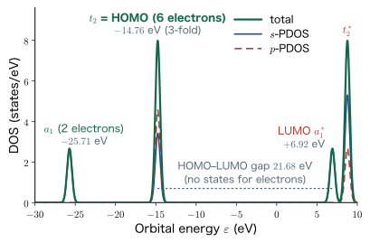
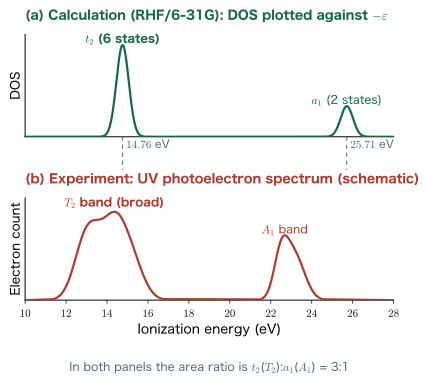
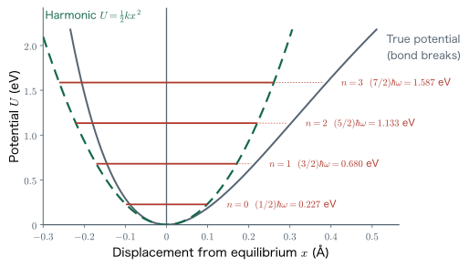

Chapter 10Quantum-Chemical Calculations of Molecules in Practice
With the nine chapters so far, we have gathered a full set of the basic tools needed for quantum-chemical calculations. The variational principle (Chapter 3) gave us a criterion for choosing a “plausible solution”; we learned how to represent orbitals with the STO-3G basis, which sums three Gaussian functions (Chapters 5 and 6); the Slater determinant (Chapter 7) guaranteed antisymmetry under the exchange of electrons; the Born–Oppenheimer approximation (Chapter 8) let us hold the nuclei fixed and define the potential energy surface; and we wrote down the Coulomb term and the exchange term (Chapter 9) as the breakdown of the total energy. In this chapter we actually run these on a computer. Our goal is to start with Molcalc, which runs in a browser alone, fetch real molecular structures from PubChem, and acquire the full set of “good practices of calculation,” covering structural relaxation, the total energy, the density of states (DOS), molecular orbitals, visualization of wave functions, and vibrational levels. The numbers you obtain by working through these steps are not themselves the answer. As the episode in this chapter shows, in which making the basis functions coarser can reverse the verdict on which structure is better, it is always the human who judges whether the numbers that come out can be trusted. This is a chapter for acquiring that division of labor: let the machine do the calculation, and supply the meaning yourself.
- Obtain free energies, vibrational frequencies, and molecular orbitals with Molcalc (GAMESS-based, STO-3G), and learn the limits of web-based calculation
- The whole procedure of fetching a molecular structure (SDF) from PubChem, converting it to xyz format, and checking it in VESTA
- Running and reading a structural relaxation, comparing the total energies before and after relaxation, and the fact that making the basis functions coarser can reverse the verdict on which structure is stable or unstable
- The density of states $D(E)=\sum_i g_i\,\delta(E-\epsilon_i)$ and Gaussian broadening, and the partial density of states (PDOS) resolved by element and by orbital
- The molecular orbitals of CH$_4$: the threefold degenerate $t_2$ at $-14.76\ \mathrm{eV}$ (HOMO, six electrons) and the $a_1^{*}$ at $+6.92\ \mathrm{eV}$ (LUMO)
- Koopmans' theorem $I_i=-\epsilon_i$ and the comparison with the ultraviolet photoelectron spectrum (UPS), with the area ratio of $t_2$ to $a_1$ being 3:1
- Visualizing wave functions with cube files (yellow = positive, blue = negative), and reading off bonding and antibonding character
- From the harmonic approximation $U=\frac12 kx^2$ to the force constant $k$, $\omega=\sqrt{k/\mu}$, $E_n=(n+\frac12)\hbar\omega$, conversion to the wavenumber in $\mathrm{cm}^{-1}$, and the scaling factor
All of the calculations in this chapter rest on the following flow. First we prepare a molecular structure (Section 10.2) and find the equilibrium structure by structural relaxation (Section 10.3). We then solve for the electronic state at that structure and extract from it the density of states, the molecular orbitals, the wave functions, and the vibrational levels (Sections 10.4–10.8). Figure 10.1 shows the whole picture. You may regard the sections that follow as explaining the blocks of this figure in turn.
10.1 First, Try It Out with Molcalc
Before running any Python script, let us try a service that lets us experience a quantum-chemical calculation with nothing but a web browser. It is Molcalc (https://molcalc.org/), made available by Jensen and co-workers at the University of Copenhagen. You build a molecule on the screen, press a button, and get back the geometry optimization, thermodynamic quantities, vibrational frequencies, and molecular orbitals.
Why? Why start with a web tool?
In the chapters of this book so far, we have seen that even a single overlap integral of $1s$ orbitals is laborious to work out on paper. For a molecule, the number of integrals grows roughly in proportion to $N^4$, where $N$ is the number of basis functions. This is already far beyond what can be followed by hand. Still, if we first learn what form the answer takes when a calculation returns, we will know where to look in the output when we later run a script ourselves. Molcalc requires almost no effort to set up the input, so it is ideal as the shortest route to learning the shape of the output.
10.1.1 Inside Molcalc: GAMESS and STO-3G
Internally, Molcalc calls a quantum-chemistry software package called GAMESS (General Atomic and Molecular Electronic Structure System). The basis set is STO-3G, that is, the “minimal basis in which a Slater-type orbital is approximated by three Gaussian functions” that we derived in Chapter 5. Because the number of basis functions per atom is the minimum possible, the calculation is fast, but the accuracy is correspondingly coarse. A molecule with too many atoms cannot be calculated on the server side.
On the left side of the screen there are buttons labeled Optimize (structural relaxation) and Calculate Properties (electronic-state calculation and vibrational-level calculation). The basic order is to press Optimize first to relax the structure, and then to press Calculate Properties. The results come back divided into four tabs.
- Free Energies: the translational, rotational, and vibrational components of the enthalpy, entropy, and constant-pressure heat capacity, together with the heat of formation.
- Vibrational Frequencies: a list of the wavenumbers ($\mathrm{cm}^{-1}$) of the normal modes, with an animation of each mode.
- Molecular Orbitals: a list of the molecular orbital energies (eV), with a display of their isosurfaces.
- Polarity and Solvation: the dipole moment and the solvation free energy.
For example, if we press Calculate Properties for methane, CH$_4$, numbers like those in Table 10.1 appear in the Free Energies tab.
| Quantity | Translation | Rotation | Vibration | Total |
|---|---|---|---|---|
| Enthalpy $H$ (kJ mol$^{-1}$) | 6.20 | 3.72 | 119.28 | 129.20 |
| Constant-pressure heat capacity $C_p$ (J mol$^{-1}$K$^{-1}$) | 20.79 | 12.47 | 2.25 | 35.51 |
| Entropy $S$ (J mol$^{-1}$K$^{-1}$) | 143.35 | 62.93 | 0.39 | 206.66 |
Note that the vibrational enthalpy, 119.28 kJ mol$^{-1}$, is strikingly large. This is not a contribution from thermal energy at room temperature; most of it is the zero-point energy, which remains even at absolute zero. As we will see in Section 10.8, the energy of the vibrational ground state is $\frac12\hbar\omega$, not zero. Adding up the $\frac12\hbar\omega$ of the nine vibrational modes of CH$_4$ indeed gives a value on the order of 100 kJ mol$^{-1}$ (Exercise 10.5).
Example 10.1: Classifying Molcalc's frequency list by degeneracy
For CH$_4$, Molcalc returned the following nine wavenumbers (in units of $\mathrm{cm}^{-1}$).
1362.27, 1362.68, 1363.07, 1451.06, 1451.20, 3207.36, 3208.09, 3208.72, 3311.59
(1) Why are there exactly nine? (2) Classify these into degenerate groups.
Solution. (1) The number of vibrational degrees of freedom of a nonlinear molecule consisting of $N$ atoms is $3N-6$. Of the $3N$ degrees of freedom in total, three are taken up by translation of the whole molecule and three by rotation. Since CH$_4$ has $N=5$, we get $3\times 5-6=9$, which agrees with the number of entries in the list.
(2) If we regard values that agree to the first decimal place as belonging to the same group, then
1362.27/1362.68/1363.07 → threefold degenerate, 1451.06/1451.20 → twofold degenerate, 3207.36/3208.09/3208.72 → threefold degenerate, 3311.59 → nondegenerate.
That is, $9=3+2+3+1$. Frequencies that should be exactly degenerate are slightly shifted because of numerical error (the evaluation of the Hessian by finite differences) and because the optimized structure deviates slightly from the ideal regular tetrahedron. That this degeneracy pattern $1+2+3+3$ is dictated by the symmetry of the regular tetrahedron (point group $T_d$) is something we will learn in Chapter 12.
10.1.2 The molecular orbitals returned by Molcalc and their basis-set dependence
In the Molecular Orbitals tab, the following nine orbital energies (eV) are listed for CH$_4$.
$-300.14,\ -24.76,\ -14.13,\ -14.12,\ -14.12,\ +19.47,\ +19.48,\ +19.48,\ +20.55$
There are only nine orbitals because STO-3G is a minimal basis. There are only nine basis functions in all: five for the C atom ($1s,\,2s,\,2p_x,\,2p_y,\,2p_z$) and one $1s$ for each of the four H atoms. The correspondence that preparing $N$ basis functions yields exactly $N$ molecular orbitals will be made clear by the secular equation in Chapter 11. There are ten electrons (C: 6, H: 4), so the lowest five orbitals are filled with two electrons each. The lowest one, at $-300.14\ \mathrm{eV}$, is the C-$1s$ core orbital and does not participate in chemical bonding.
Caution: With a coarse basis, even the order of the unoccupied orbitals changes
The unoccupied orbitals obtained with STO-3G are $+19.47$ (threefold degenerate) and $+20.55$. However, as we will see later in Section 10.5, when the same CH$_4$ is calculated with the more flexible 6-31G basis, the unoccupied orbitals become $+6.92$ (nondegenerate) and $+8.78$ (threefold degenerate), so that even the degree of degeneracy of the lowest unoccupied molecular orbital (LUMO) is interchanged. This happens even though the occupied orbitals (the orbitals responsible for bonding) do not change much: $-24.76 \to -25.77$ and $-14.12 \to -14.80$. Unoccupied orbitals obtained with a minimal basis must never be trusted quantitatively. This is because unoccupied orbitals tend to spread outside the molecule, but a minimal basis provides no functions that “spread outward.” Why the flexibility of the basis functions matters was seen in Chapter 6.
Molcalc is convenient, but it has the following limitations: (i) the basis is fixed to STO-3G, (ii) there is an upper limit on the number of atoms, and (iii) the output cannot be fed into our own analysis as a file. So from here on, we move the stage to PySCF, which we have been using since Chapter 6, and reproduce on our own machines all the functions that Molcalc offers. We begin by obtaining the structure of the molecule to be calculated.
10.2 Fetching Molecular Structures from PubChem
To start a calculation, we need the arrangement of the atoms (their coordinates). For a single atom such as the hydrogen atom or the He atom, the origin was the only coordinate needed, but for a molecule this is no longer the case. Fortunately, the structures of the molecules in the world are organized as databases. Here we use PubChem (https://pubchem.ncbi.nlm.nih.gov/), which is operated by the U.S. NIH.
10.2.1 Searching by chemical formula or by chemical name
If we enter the chemical formula C6H12O6 in the search box, a large number of candidates appear. This is because C$_6$H$_{12}$O$_6$ is the chemical formula not only of glucose (dextrose) but also of many other isomers, such as fructose, galactose, and mannose. If the target substance has already been decided, searching by chemical name is faster. For the cyclic structure of D-glucose (the pyranose form), we simply enter D-Glucopyranose. A single candidate is then found, with the following information.
| Compound CID | 5793 |
|---|---|
| Molecular formula (MF) | C$_6$H$_{12}$O$_6$ |
| Molecular weight (MW) | 180.16 g mol$^{-1}$ |
| IUPAC name | (3R,4S,5S,6R)-6-(hydroxymethyl)oxane-2,3,4,5-tetrol |
| InChIKey | WQZGKKKJIJFFOK-GASJEMHNSA-N |
Convenient identifiers that specify a substance uniquely are the CID (PubChem Compound ID) and the InChIKey. If a paper or report merely says “we calculated glucose,” it does not convey which isomer or which stereochemical configuration was used. Giving the CID alongside avoids any misunderstanding.
10.2.2 Downloading the 3D Conformer and the SDF
When we open the page of the target compound, there is an item called “1.2 3D Conformer.” A three-dimensional molecular model is displayed there, and the coordinate file can be saved from Download Coordinates at the upper right. Clicking Save in the SDF column gives us a file named Conformer3D_COMPOUND_CID_5793.sdf.
The SDF (structure-data file) is a format that contains, in addition to the element symbols and coordinates of the atoms, a bond block that specifies which atoms are joined to which atoms by what order of bond. It is standard in the world of chemical informatics, but some visualization software cannot read it, and it is redundant as an input for a quantum-chemical calculation.
Caution: PubChem’s 3D structures are not “quantum-chemical equilibrium structures”
The 3D Conformers in PubChem are, in many cases, “plausible” three-dimensional structures generated with a classical force field (such as MMFF94). In general, they do not coincide with the minimum of the potential energy surface $E(\{\bm{R}_I\})$ defined in Chapter 8, that is, with the equilibrium structure of a quantum-chemical calculation. Therefore, we should not use the downloaded structure as it is, but always redo the structural relaxation with our own method and basis (Section 10.3). Moreover, even for the same molecule there are several conformers, and PubChem often provides several of them, as in “Conformer 1 of 8.” Keep a record of which one you took.
10.2.3 Conventions for file names
The downloaded file has a mechanical name, Conformer3D_COMPOUND_CID_5793.sdf. If we simply throw it into the working directory as it is, a week later we will find ourselves wondering what “5793” was. So, we rename SDF files according to the rule SDF_{substance name}.sdf and xyz files according to the rule XYZ_{substance name}.xyz. If we do this, the moment we type ls we can see at a glance which files of which substances we have.
$ cp ~/Downloads/Conformer3D_COMPOUND_CID_5793.sdf .
$ cp Conformer3D_COMPOUND_CID_5793.sdf SDF_D-glucose.sdf
$ ls
calc_pyscf.py SDF_D-glucose.sdf XYZ_CH4.xyz
calc_pyscf_dos.py sdf2xyz.py XYZ_H.xyz
calc_pyscf_relax.py XYZ_B.xyz XYZ_He.xyz
calc_pyscf_vib.py XYZ_Be.xyz XYZ_N.xyz
calc_pyscf_wf.py XYZ_C.xyz XYZ_O.xyzListing 10.1: Renaming the downloaded SDF file to a name that tells us its contents. If we also leave the original file undeleted, we can check the CID later.
10.2.4 Converting from SDF to xyz, and the format of the xyz file
Using sdf2xyz.py, which is distributed in the lecture, we obtain from the SDF an xyz file in which the bond block has been dropped and only the coordinates have been extracted.
$ python3 sdf2xyz.py --sdf SDF_D-glucose.sdf
Converted: SDF_D-glucose.sdf -> XYZ_D-glucose.xyzListing 10.2: Conversion from SDF to xyz. The output file name is the input name with SDF_ replaced by XYZ_.
The xyz format is the plain text format most commonly used in quantum-chemical calculations. Its layout consists of just the following three rules.
Definition: The xyz format
- Line 1: the number of atoms (a single integer only).
- Line 2: a comment line. Anything may be written there (it may also be a blank line). It is good to write the molecule name, the source, the units, and so on.
- Line 3 and after: one atom per line. Write the element symbol and the $x,\ y,\ z$ coordinates separated by spaces. The unit of length is the ångström ($1\ \text{Å}=10^{-10}\ \mathrm{m}$).
3
H2O molecule r(OH)=0.96 A, angle(HOH)=104.5 deg
O 0.000000 0.000000 0.000000
H 0.759062 0.587729 0.000000
H -0.759062 0.587729 0.000000Listing 10.3: The xyz file of the water molecule (XYZ_H2O.xyz). There is no rule for the order of the atoms, but it is a good habit to write the heavy atoms first so as not to get confused when reading the output later.
Example 10.2: Building the xyz file of the water molecule yourself
For a water molecule with O–H bond length $r=0.96\ \text{Å}$ and H–O–H bond angle $\theta=104.5^\circ$, place the O atom at the origin, put the molecule in the $xy$ plane, and take the $y$ axis along the bisector. Find the coordinates of the hydrogen atoms.
Solution. The angle from the bisector to each O–H bond is $\theta/2 = 52.25^\circ$. The position vector of a hydrogen atom as seen from the O atom has magnitude $r$ and makes an angle $\theta/2$ with the $y$ axis, so
$$ \begin{align} x &= \pm r\sin\frac{\theta}{2} = \pm 0.96 \times \sin 52.25^\circ = \pm 0.96\times 0.79081 = \pm 0.75906\ \text{Å},\notag\\ y &= r\cos\frac{\theta}{2} = 0.96 \times \cos 52.25^\circ = 0.96\times 0.61207 = 0.58773\ \text{Å},\notag\\ z &= 0 .\notag \end{align} $$Hence we obtain Listing 10.3. As a check, the distance between the two hydrogen atoms is $2\times 0.75906 = 1.51812\ \text{Å}$, which agrees with the law of cosines, $d=\sqrt{2r^2(1-\cos\theta)}=\sqrt{2\times0.96^2\times(1-(-0.24756))}=1.5181\ \text{Å}$.
10.2.5 Viewing in VESTA
Once the coordinates are ready, before feeding them into a calculation we must always look at them with our own eyes. The crystal-structure visualization software VESTA can also read the xyz format, so we can open the file as follows (an example on macOS).
$ open -a VESTA XYZ_D-glucose.xyzListing 10.4: Opening an xyz file in VESTA. On Windows, it suffices to double-click the file or to drag and drop it onto VESTA.
In VESTA we can not only rotate the molecule and look at it from all sides; clicking two atoms gives the bond length, and clicking three atoms gives the bond angle. For D-glucose, we can confirm on the spot, for example, that the six-membered ring (the pyranose ring) has a chair form, that the C–O bond is about 1.4 Å, and that the C–H bond is about 1.1 Å. The Output field at the bottom of the window shows the number of atoms and the number of bonds (24 atoms and 32 bonds for this structure).
Why? Why do we always look at a picture before computing?
Accidents such as mixing up coordinate files, mixing up units (ångström and bohr), overlapping atoms, and forgetting to add hydrogens are hard to notice just by looking at the numbers. In a picture, however, they are obvious at a glance. Structures such as “two atoms stuck together in a lump” or “two molecules lying on top of each other” can cause the SCF calculation to fail to converge or return an impossible total energy. The longer a job takes to compute, the greater the cost-effectiveness of a visual check before submitting it.
10.3 Running a Structural Relaxation
Structural relaxation (also called geometry optimization) is the task of searching for a local minimum of the potential energy surface introduced in Chapter 8:
$$ \begin{equation} E(\{\bm{R}_I\}) = \min_{\psi}\ \frac{\braket{\psi|\Ham_{\mathrm{el}}(\{\bm{R}_I\})|\psi}}{\braket{\psi|\psi}} + \sum_{I\lt J}\frac{Z_I Z_J \ee^2}{4\pi\eps\abs{\bm{R}_I-\bm{R}_J}} \label{eq:10-pes} \end{equation} $$Here $\Ham_{\mathrm{el}}$ is the Hamiltonian of the electronic system with the nuclei held fixed, and the second term is the internuclear repulsion. Thanks to the Born–Oppenheimer approximation (Chapter 8), the nuclear positions $\{\bm{R}_I\}$ can be treated as “adjustable parameters.” At a minimum, the force acting on every atom
$$ \begin{equation} \bm{F}_I = -\frac{\partial E}{\partial \bm{R}_I} \label{eq:10-force} \end{equation} $$vanishes. That is, structural relaxation is nothing other than the search, on the surface of Eq. \eqref{eq:10-pes}, for a point at which the force of Eq. \eqref{eq:10-force} vanishes for every atom. Because this force can be computed directly from the wave function by the Hellmann–Feynman theorem (Chapter 8), it suffices to repeat the procedure “compute the forces → move the atoms a little in the direction of the forces → solve the electronic state again” until the forces become sufficiently small.
10.3.1 Running the calculation and reading the output
Let us relax D-glucose (24 atoms) with the 6-31G basis set as a closed shell (spin multiplicity 1).
$ python3 calc_pyscf_relax.py --xyz XYZ_D-glucose.xyz --spin 0 --basis 6-31gListing 10.5: Running a structural relaxation. In PySCF's convention, --spin specifies $2S$ (the number of unpaired electrons). For a closed-shell molecule it is 0.
When the script runs, the optimization library geomeTRIC is invoked internally, and a log like the following scrolls by, one line per step.
Step 20 : Displace = 3.194e-03/1.351e-02 (rms/max) Trust = 3.000e-01 (=) Grad = 8.707e-05/1.712e-04 (rms/max) E (change) = -683.0329609087 (-2.811e-06) Quality = 1.350
Step 21 : Displace = 1.732e-03/6.261e-03 (rms/max) Trust = 3.000e-01 (=) Grad = 6.012e-05/1.476e-04 (rms/max) E (change) = -683.0329621255 (-1.217e-06) Quality = 1.274
Step 22 : Displace = 6.254e-04/1.609e-03 (rms/max) Trust = 3.000e-01 (=) Grad = 2.309e-05/5.726e-05 (rms/max) E (change) = -683.0329624172 (-2.917e-07) Quality = 1.204
Converged!
========================================
PySCF Geometry Optimization
========================================
XYZ file : XYZ_D-glucose.xyz
Basis : 6-31g
Method : RHF
Theory : scf
Charge : 0
Spin (2S) : 0
Text output : relax_XYZ_D-glucose.txt
----------------------------------------
Optimization finished.
Final energy : -18586.273591 eV
Output XYZ : XYZ_D-glucose-finish.xyzListing 10.6: The end of the output of a structural relaxation. For this 24-atom molecule, the SCF calculation for the structural relaxation was repeated 23 times (from Step 0 through Step 22) and took about 960 seconds.
There are four numbers to read.
- Grad: the root mean square and the maximum of the force (energy gradient). This is the main criterion for convergence. In the example above, the maximum finally falls to $5.7\times10^{-5}$.
- E (change): the total energy and its change from the previous step. The unit is hartree. If the change falls below $10^{-6}$ hartree (about $3\times10^{-5}$ eV), the calculation is sufficiently converged.
- Displace: how far the atoms have moved. In the final step they moved by at most $1.6\times10^{-3}$ bohr, that is, only about $10^{-3}$ Å.
- Converged!: the signal that all three of the above have fallen below their thresholds. Do not use a result that does not show this message.
The final total energy is displayed as $-683.0329624172$ hartree. To convert it to eV, multiply by $1\ \mathrm{Hartree}=27.211386\ \mathrm{eV}$:
$$ -683.0329624172 \times 27.211386 = -18586.2736\ \mathrm{eV} $$which agrees with Final energy : -18586.273591 eV in the output. The relaxed structure is written to a file named XYZ_D-glucose-finish.xyz. The original XYZ_D-glucose.xyz is not overwritten, so the structures before and after relaxation can be compared.
Math Note: The SCF loop and the structural relaxation loop are nested
The two are easy to confuse, so let us sort them out. The inner loop is the SCF (self-consistent field) iteration, which, with the nuclei held fixed, is repeated until the electronic orbitals and the effective potential become consistent with each other. The outer loop is the structural relaxation, and it advances by one step each time the SCF converges once. In the example above the outer loop ran 23 steps, so the SCF calculation itself was executed at least 23 times (including the evaluation of the forces by numerical differentiation). The reason a molecule with many atoms takes a long time is that both the cost of a single SCF calculation and the number of outer steps increase.
10.3.2 Comparing the total energy before and after relaxation
Whether the structural relaxation did meaningful work can be seen by comparing the total energies before and after relaxation. Simply run a single-point calculation twice, with the same method and the same basis set.
$ python3 calc_pyscf.py --xyz XYZ_D-glucose.xyz --spin 0 --basis 6-31g
========================================
PySCF Calculation
========================================
XYZ file : XYZ_D-glucose.xyz
Basis : 6-31g
Charge : 0
Spin (2S) : 0
Theory : scf
----------------------------------------
Method : RHF
Total Energy : -18585.549008 eV
<S^2> : 0.000000
Multiplicity : 1.0
$ python3 calc_pyscf.py --xyz XYZ_D-glucose-finish.xyz --spin 0 --basis 6-31g
...
Total Energy : -18586.273591 eVListing 10.7: Comparing the total energies before relaxation (the PubChem structure) and after relaxation with the 6-31G basis set.
Taking the difference gives
$$ \begin{equation} \Delta E = E_{\text{after}} - E_{\text{before}} = -18586.273591 - (-18585.549008) = -0.724583\ \mathrm{eV} \label{eq:10-dE631g} \end{equation} $$Indeed, the energy has fallen. Converting this to units familiar in chemistry, using $1\ \mathrm{eV} = 96.485\ \mathrm{kJ\,mol^{-1}}$, we obtain
$$ 0.724583\ \mathrm{eV} \times 96.485\ \mathrm{kJ\,mol^{-1}\,eV^{-1}} = 69.9\ \mathrm{kJ\,mol^{-1}} $$Considering that a single hydrogen bond is about 20 kJ mol$^{-1}$, this is by no means a negligible amount. It means that the force-field structure from PubChem deviated considerably from the quantum-chemical equilibrium structure.
10.3.3 Aside: lowering the basis set reverses the verdict
Now comes the highlight of this section. Let us calculate exactly the same two structures, this time with the STO-3G basis set.
$ python3 calc_pyscf.py --xyz XYZ_D-glucose.xyz --spin 0
Basis : sto-3g
Total Energy : -18352.694979 eV
$ python3 calc_pyscf.py --xyz XYZ_D-glucose-finish.xyz --spin 0
Basis : sto-3g
Total Energy : -18352.345758 eVListing 10.8: Calculating the same two structures with the STO-3G basis set (if --basis is omitted, the default sto-3g is used).
This time we obtain
$$ \begin{equation} \Delta E^{\mathrm{STO\text{-}3G}} = -18352.345758-(-18352.694979) = +0.349221\ \mathrm{eV} \label{eq:10-dEsto3g} \end{equation} $$that is, the energy after relaxation is higher. The structure that was stabilized by 0.72 eV with 6-31G is judged to be 0.35 eV less stable with STO-3G. The sign is reversed.
Caution: With a coarse basis set, the verdict of “stable or unstable” can be reversed
What the variational principle (Chapter 3) guarantees is only that within the same structure and the same basis set, a wave function with lower energy is better. Comparing “the energy of structure 1 calculated with basis set A” with “the energy of structure 2 calculated with basis set B” is meaningless. More troublesome still, as in the example above, even when two structures are compared with the same basis set, the sign of the difference can be wrong if that basis set is too coarse. STO-3G has the minimum number of functions per atom, so it cannot represent slight deformations of the electron distribution around an atom (the electron cloud following a small change in a bond angle). This lack of expressive power affects each structure by a different amount, so a difference of about $0.3$ eV is easily overturned.
There are three practical lessons. (i) Match the basis set, the method, and the convergence criteria exactly in the two calculations being compared. (ii) Use a basis set whose error is sufficiently smaller than the energy difference of interest. (iii) Confirm that the conclusion does not change when the basis set is changed (a basis-set convergence test).
Why? Why does the total energy fall when the basis set is enlarged?
By the variational principle, the more degrees of freedom we give the trial function, the lower the minimized energy falls, decreasing monotonically toward the true value (Chapter 3). Enlarging the set of basis functions is nothing other than increasing the degrees of freedom of the trial function. Indeed, the total energy of D-glucose drops by as much as $233$ eV, from $-18352.69$ eV with STO-3G to $-18585.55$ eV with 6-31G. This $233$ eV is far larger than the energy of a chemical bond (a few eV per bond), but most of it comes from the improved description of the core electrons, and it is a constant “offset” that has no effect on chemistry. Therefore a comparison of absolute values is meaningless, and only the differences have physical meaning.
Example 10.3: Practice with unit conversions
(1) Convert the $+0.349221$ eV of Eq. \eqref{eq:10-dEsto3g} to kJ mol$^{-1}$. (2) How many eV is the energy change $-2.917\times 10^{-7}$ hartree in the final step of the structural relaxation? (3) This change is smaller than the thermal energy at room temperature, $k_{\mathrm{B}}T$ (about $0.026$ eV at $T=300$ K), by what factor?
Solution. (1) $0.349221\times 96.485 = 33.7\ \mathrm{kJ\,mol^{-1}}$.
(2) $-2.917\times10^{-7}\times 27.211386 = -7.94\times10^{-6}\ \mathrm{eV}$.
(3) $0.026/7.94\times10^{-6} \approx 3.3\times10^{3}$ times. That is, the convergence criterion is applied with a precision of 1/3000 of the thermal fluctuations at room temperature or finer. The reason the convergence conditions of a structural relaxation are so strict that one wonders whether they go too far is that, in order to obtain the force (the derivative of the energy) accurately, the energy itself must be obtained with a much higher precision.
10.4 Plotting the Density of States (DOS)
Once the equilibrium structure has been obtained, the next step is to examine the electronic states at that structure. The clearest way to display them is the density of states (DOS).
Definition: Density of states
The quantity that expresses how densely packed the states available to electrons are in the neighborhood of an energy $E$ is called the density of states. Let the molecular orbital energies be $\epsilon_i$ ($i=1,2,\dots,M$, where $M$ is the number of basis functions). Then it is defined by
$$ \begin{equation} D(E)=\sum_{i=1}^{M} g_i\,\delta(E-\epsilon_i) \label{eq:10-dos-delta} \end{equation} $$Here $g_i$ is the number of electrons that one molecular orbital can accommodate; in a closed-shell calculation that does not distinguish spins (RHF), $g_i=2$ (spin up and spin down). $\delta$ is the Dirac delta function, and $\int D(E)\,\dd E = 2M$ holds.
In a solid, the orbitals form continuous energy bands, so $D(E)$ is literally a continuous function (Chapter 14). The orbital energies of a molecule, on the other hand, are discrete, so Eq. \eqref{eq:10-dos-delta} as it stands gives only a picture of many infinitely thin spikes, which is hard to read. We therefore replace the delta function with a Gaussian function of width $\sigma$.
This is called Gaussian broadening. In the limit $\sigma\to 0$ it returns to Eq. \eqref{eq:10-dos-delta}. Since the total integral of a Gaussian function is 1, the area of a peak does not change however $\sigma$ is chosen; only the height and the width change. The default value in calc_pyscf_dos.py is $\sigma=0.300$ eV.
Math Note: Gaussian or Lorentzian?
Besides the Gaussian function, the Lorentzian function
$$ \delta(E-\epsilon_i)\ \to\ \frac{1}{\pi}\frac{\gamma}{(E-\epsilon_i)^2+\gamma^2} $$is also often used to approximate the delta function. Both are normalized so that $\int(\cdots)\dd E=1$. The tails of the Lorentzian decay slowly, as $1/E^2$, so peaks that are far apart overlap easily. The linewidth of an experimental spectrum is often Lorentzian when it originates from the finite lifetime of a state, and often Gaussian when it originates from the instrumental resolution or from inhomogeneous broadening. Note that the width put into the DOS of a molecule is an artificial width introduced simply to make the picture easier to see, not a physical lifetime width.
10.4.1 Partial density of states (PDOS)
The real power of the DOS lies in the fact that it can be decomposed to show “which orbital of which atom contributes at which energy.” A molecular orbital can be written as an LCAO (linear combination of basis functions),
$$ \begin{equation} \phi_i(\bm{r})=\sum_{\mu=1}^{M} c_{\mu i}\,\chi_\mu(\bm{r}) \label{eq:10-lcao} \end{equation} $$where $\chi_\mu$ are the basis functions placed on the atoms (for example, the STO-3G of Chapter 5). The coefficients $c_{\mu i}$ in Eq. \eqref{eq:10-lcao} are quantities determined by solving the secular equation derived in Chapter 11. If we can fix a weight $w_{i\mu}$ that expresses what fraction of the $i$th molecular orbital is made up of the basis function $\mu$, then
$$ \begin{equation} D_\alpha(E)=\sum_{i}\ \sum_{\mu\in\alpha} w_{i\mu}\; g_i\,\frac{1}{\sigma\sqrt{2\pi}}\exp\!\left[-\frac{(E-\epsilon_i)^2}{2\sigma^2}\right] \label{eq:10-pdos} \end{equation} $$defines the partial density of states (PDOS) for each atom (or each element, or each $s$/$p$/$d$ orbital type). Here $\mu\in\alpha$ means “the sum over the basis functions belonging to the group $\alpha$.”
There are different conventions for choosing the weights. The naive choice would be $|c_{\mu i}|^2$, but because the basis functions are not orthogonal to one another ($S_{\mu\nu}=\int\chi_\mu^*\chi_\nu\,\dd^3r \neq \delta_{\mu\nu}$; the overlap integral of Chapter 5), we get $\sum_\mu |c_{\mu i}|^2 \neq 1$. The widely used remedy is the Löwdin projection, in which the basis is first orthogonalized using the square root of the overlap matrix $S$ and the coefficients are taken afterward:
$$ \begin{equation} w_{i\mu}=\left|\left(S^{1/2}C\right)_{\mu i}\right|^{2}, \qquad \sum_{\mu=1}^{M} w_{i\mu}=1 \label{eq:10-lowdin} \end{equation} $$($C$ is the matrix whose entries are the coefficients $c_{\mu i}$). This is what is meant by Projection : lowdin in the output of calc_pyscf_dos.py. Since $\sum_\mu w_{i\mu}=1$ holds, adding up all the PDOS always gives back the total DOS.
10.4.2 Plotting the DOS of glucose
$ python3 calc_pyscf_dos.py --xyz XYZ_D-glucose-finish.xyz --spin 0 --basis 6-31g \
--xrange -30 10 --element-pdos
========================================
PySCF DOS-like Calculation
========================================
XYZ file : XYZ_D-glucose-finish.xyz
Method : RHF
Theory : scf
Basis : 6-31g
Total Energy : -18586.273591 eV
Charge : 0
Spin (2S) : 0
Projection : lowdin
DOS mode : gaussian broadening
Gaussian sigma: 0.300 eV
Energy zero : absolute MO energy
Plot output : DOS_XYZ_D-glucose-finish.pdf
CSV output : DOS_XYZ_D-glucose-finish.csv
Text output : DOS_XYZ_D-glucose-finish.txt
Element PDOS : C(s), C(p), H(s), O(s), O(p)Listing 10.9: Computing the element- and orbital-resolved partial density of states. --xrange -30 10 is the range of the horizontal axis (eV), and --element-pdos is the option that outputs the PDOS for each element. If you forget the options, just type python3 calc_pyscf_dos.py --help.
Looking at the resulting PDOS, we see that the region from $-30$ eV to about $-11$ eV corresponds to the occupied valence band, and that the neighborhood of the highest occupied orbital (HOMO) is made up of O-$2p$ and C-$2p$. On the unoccupied-orbital side above $+4$ eV, on the other hand, the contribution of H-$s$ is large. Glucose consists of the three elements C, H, and O, and from this single figure we can read off which orbital of which atom the chemically reactive “outermost electrons” occupy.
10.4.3 The DOS of CH$_4$ and what can be read from it
Glucose has as many as 24 atoms, and its levels are crowded together, so let us practice with the simpler CH$_4$.
$ python3 calc_pyscf_dos.py --xyz XYZ_CH4.xyz --spin 0 --basis 6-31g --xrange -30 10
PySCF DOS-like Calculation
----------------------------------------
Total Energy : -1093.361059 eV
Gaussian sigma: 0.300 eV
MO projected weights:
spin MO energy(eV) occ s p d f
-----------------------------------------------------------------------
restricted 1 -305.00055 2 1.0000 0.0000 0.0000 0.0000
restricted 2 -25.71378 2 1.0000 0.0000 0.0000 0.0000
restricted 3 -14.76147 2 0.4275 0.5725 0.0000 0.0000
restricted 4 -14.76090 2 0.4275 0.5725 0.0000 0.0000
restricted 5 -14.76075 2 0.4275 0.5725 0.0000 0.0000
restricted 6 6.91612 0 1.0000 0.0000 0.0000 0.0000
restricted 7 8.77636 0 0.6643 0.3357 0.0000 0.0000
restricted 8 8.77645 0 0.6643 0.3357 0.0000 0.0000
restricted 9 8.77674 0 0.6644 0.3356 0.0000 0.0000
restricted 10 20.26052 0 0.2080 0.7920 0.0000 0.0000
restricted 11 20.26068 0 0.2080 0.7920 0.0000 0.0000
restricted 12 20.26099 0 0.2080 0.7920 0.0000 0.0000Listing 10.10: DOS calculation for CH$_4$. The energy of each molecular orbital, its occupation number (occ), and the weights of the $s$/$p$/$d$/$f$ components (the Löwdin weights of Eq. \eqref{eq:10-lowdin}) are printed as a table.
Comparing this table with the DOS plot (Figure 10.3), we can read off the following.
- The orbital at $-305.00$ eV is the C-$1s$ core orbital. It does not appear in the range of the figure ($-30$ eV and above).
- At $-25.71$ eV there is one nondegenerate orbital with occupation number 2. Its $s$ component is 100%.
- At $-14.76$ eV there are three nearly perfectly degenerate orbitals, each with occupation number 2, together holding six electrons. The $s$ component is 42.75% and the $p$ component is 57.25%. This is the HOMO.
- At $+6.92$ eV there is one orbital with occupation number 0 (its $s$ component is 100%). This is the LUMO.
- At $+8.78$ eV there are threefold degenerate unoccupied orbitals.

Example 10.4: Predicting the peak heights of the DOS
With $\sigma=0.300$ eV in Eq. \eqref{eq:10-dos-gauss}, find (1) the height of the peak produced by three perfectly degenerate occupied orbitals and (2) the height of the peak produced by a single nondegenerate occupied orbital, and compare them with Figure 10.3.
Solution. The peak height of a Gaussian function is $\dfrac{1}{\sigma\sqrt{2\pi}}$ at $E=\epsilon_i$. For $\sigma=0.300$ eV,
$$ \frac{1}{0.300\times\sqrt{2\pi}}=\frac{1}{0.300\times 2.50663}=\frac{1}{0.751988}=1.3298\ \mathrm{eV^{-1}} . $$(1) The three orbitals lie at the same energy, and each orbital can accommodate $g_i=2$ electrons, so the number of states is $3\times 2=6$. Hence the height is $6\times 1.3298 = 7.98\ \mathrm{states/eV}$.
(2) The number of states is 2, so the height is $2\times1.3298=2.66\ \mathrm{states/eV}$.
These agree with the peak heights in Figure 10.3 (about 8.0 and about 2.7). Note that the ratio is exactly 3:1. This will be decisive when we compare with the photoelectron spectrum in Section 10.6.
Caution: The vertical axis of the DOS is not “the number of electrons” but “the number of available states”
$D(E)$ in Eq. \eqref{eq:10-dos-delta} counts not whether electrons are actually present at a given location but how many boxes there are for electrons to enter. This is why peaks also stand at $+6.92$ eV and $+8.78$ eV in Figure 10.3; these are unoccupied orbitals with occupation number 0. If you want to know the number of electrons actually present, compute the sum over the occupied orbitals only,
$$ N=\int_{-\infty}^{E_{\mathrm{HOMO}}} D(E)\,\dd E $$For CH$_4$ this gives $2+2+6=10$, which agrees with C (6 electrons) + H$_4$ (4 electrons).
10.5 The Molecular Orbitals of CH$_4$
The table in Listing 10.10 actually contains the whole picture of the chemical bonding in CH$_4$ just as it stands. Let us read it through.
10.5.1 Where are the electrons?
The number of electrons in CH$_4$ is $6+4\times1=10$. Adding up the occupation numbers (occ) in the table from the top gives $2+2+2+2+2=10$, so five orbitals are filled. The breakdown is as shown in the following table.
| MO | $\epsilon_i$ (eV) | Occupation number | $s$ | $p$ | Assignment |
|---|---|---|---|---|---|
| 1 | $-305.00$ | 2 | 1.000 | 0.000 | C-$1s$ core |
| 2 | $-25.71$ | 2 | 1.000 | 0.000 | $a_1$ bonding (C-$2s$ + H-$1s$) |
| 3,4,5 | $-14.76$ | 2 each (6 in total) | 0.428 | 0.573 | $t_2$ bonding (C-$2p$ + H-$1s$) = HOMO |
| 6 | $+6.92$ | 0 | 1.000 | 0.000 | $a_1^{*}$ antibonding = LUMO |
| 7,8,9 | $+8.78$ | 0 | 0.664 | 0.336 | $t_2^{*}$ antibonding |
Six electrons occupy the orbitals at $-14.76$ eV—this is the fact we most want you to remember in this section. The reason is that there are three orbitals with the same energy, and each of them holds two electrons.
10.5.2 What the $s$ and $p$ components tell us
The $s$ and $p$ columns of Table 10.3 are not just a list of numbers. MO 2 ($-25.71$ eV) has a $p$ component of exactly 0. That is, this orbital contains no C-$2p$ at all and is built only from C-$2s$ and the four H-$1s$ orbitals. On the other hand, MOs 3–5 ($-14.76$ eV) have $s$ = 0.4275 and $p$ = 0.5725, so C-$2p$ accounts for more than half. Moreover, no C-$2s$ is mixed into these.
Physical Meaning: Why do $s$ and $p$ separate so cleanly?
In tetrahedral CH$_4$, the C-$2s$ orbital extends equally in every direction (it is spherically symmetric). It has overlap only with the “all-same-sign” combination $\chi_{a_1}\propto(1s_{\mathrm{H}_1}+1s_{\mathrm{H}_2}+1s_{\mathrm{H}_3}+1s_{\mathrm{H}_4})$, which treats all four hydrogens equivalently; its overlap with combinations in which the signs alternate cancels exactly and vanishes. Conversely, an orbital that has a direction, such as C-$2p_z$, overlaps with combinations in which the signs change, such as “the upper two H atoms are $+$ and the lower two are $-$.” The two kinds of orbitals have zero overlap integral to begin with, so they cannot mix. Therefore the valence orbitals of CH$_4$ always split into “one $s$-type orbital” and “three $p$-type orbitals.”
Formulating this claim—that whether an overlap vanishes is determined by symmetry alone—in the language of group theory (irreducible representations and character tables) is the subject of Chapter 12. The symbols $a_1$ and $t_2$ used there are exactly the classification in Table 10.3 ($a$ means nondegenerate and $t$ means threefold degenerate).
10.5.3 The molecular orbital diagram
Putting the above together, we can draw a molecular orbital diagram like Figure 10.4. On the left we place the group orbitals made by the four hydrogens, on the right the atomic orbitals of carbon, and in the center the molecular orbitals formed by mixing the two.
Let us check how to read the figure.
- First, recombine the four hydrogen $1s$ orbitals into four combinations that match the symmetry of CH$_4$ (group orbitals, also called symmetry-adapted linear combinations). This yields one all-same-sign combination ($a_1$) and three combinations in which the signs alternate ($t_2$).
- On the carbon side, $2s$ is of $a_1$ type, and $2p_x,2p_y,2p_z$ are of $t_2$ type.
- Only orbitals of the same type mix. From $a_1$ and $a_1$ arise a bonding $a_1$ and an antibonding $a_1^{*}$; from $t_2$ and $t_2$ arise a bonding $t_2$ (three orbitals) and an antibonding $t_2^{*}$ (three orbitals).
- Filling the eight valence electrons (four from the carbon $2s^2 2p^2$ and four from the four hydrogens) from the bottom puts two in $a_1$ and six in $t_2$, so exactly the bonding orbitals are filled. The antibonding orbitals are empty. That is why CH$_4$ is a stable molecule, and its bond order corresponds formally to four bonds.
Caution: Reconciling with “four equivalent sp³ hybrid orbitals”
In high school and first-year undergraduate chemistry, the bonding in CH$_4$ is explained in terms of “four equivalent $sp^3$ hybrid orbitals.” This picture is excellent for understanding the directions of the bonds (tetrahedral, 109.47°), but read literally it creates the mistaken expectation that “all four bonds have the same energy.” In fact, as Figure 10.4 shows, the valence electrons split into two different energies, $-25.71$ eV and $-14.76$ eV.
The two pictures do not contradict each other. By suitably recombining the four molecular orbitals $a_1$ and $t_2$ through linear combinations, one can construct four equivalent localized orbitals (the $sp^3$-like picture). Neither the total electron density nor the total energy changes. However, the physical quantity called the orbital energy can no longer be defined once the orbitals are remixed by linear combination. As we will see in the next section, photoelectron spectroscopy actually observes two peaks corresponding to $-14.76$ eV and $-25.71$ eV. What the experiment sees is the $a_1$/$t_2$ picture.
Example 10.5: The HOMO–LUMO gap and its meaning
From Table 10.3, find the HOMO–LUMO gap of CH$_4$. Then, from this value, discuss whether CH$_4$ absorbs visible light (wavelength 400–800 nm, photon energy 1.6–3.1 eV).
Solution. The gap is
$$ \Delta = \epsilon_{\mathrm{LUMO}}-\epsilon_{\mathrm{HOMO}} = 6.92-(-14.76) = 21.68\ \mathrm{eV} $$Since this is far larger than the photon energy of visible light, CH$_4$ undergoes no electronic excitation by visible light. Indeed, methane is colorless and transparent.
A caution is needed, however. The orbital-energy difference in the Hartree–Fock method is known to greatly overestimate the excitation energy (because it neglects the orbital relaxation and the electron correlation that accompany the excitation of one electron), and the measured lowest excitation energy of CH$_4$ is about 9 eV (the vacuum ultraviolet region). It is dangerous to compare the numerical value of the gap itself with experiment; one should confine oneself to a qualitative argument such as “sufficiently larger than visible light.” The calculation of band gaps suffers from the same difficulty in solids, and we return to it in Chapter 14.
10.6 Comparison with the Photoelectron Spectrum
Can the orbital energies we have computed be checked by experiment? They can. The technique is photoelectron spectroscopy.
10.6.1 What is photoelectron spectroscopy?
When light of energy $h\nu$ (UPS if it is ultraviolet light, XPS if it is X-rays) strikes a material, electrons are ejected. If we measure the kinetic energy $E_{\mathrm{kin}}$ of an ejected electron, conservation of energy tells us the energy at which that electron was originally bound (the ionization energy $I$).
$$ \begin{equation} I = h\nu - E_{\mathrm{kin}} \label{eq:10-pes-energy} \end{equation} $$In Eq. \eqref{eq:10-pes-energy}, $h\nu$ is the energy of the incident light and is known, and $E_{\mathrm{kin}}$ is the measured quantity, so $I$ is determined. Plotting $I$ on the horizontal axis and “the number of electrons ejected” on the vertical axis gives the photoelectron spectrum. If many electrons are packed in at a certain $I$, many electrons are also ejected from there. In other words, the photoelectron spectrum can be regarded as an experimental measurement of the density of states of the occupied states.
10.6.2 Koopmans' theorem
What connects the orbital energies $\epsilon_i$ obtained from calculation with the experimental ionization energies $I$ is Koopmans' theorem.
Theorem: Koopmans' theorem
For a closed-shell molecule obtained by the Hartree–Fock method, the energy required to remove one electron from the $i$th molecular orbital is given by, if we assume that the remaining orbitals do not change (are frozen),
$$ \begin{equation} I_i = E^{(N-1)}-E^{(N)} = -\epsilon_i \label{eq:10-koopmans} \end{equation} $$That is, the orbital energy with its sign reversed is the ionization energy.
Derivation: Koopmans' theorem in the notation of Chapter 9
In Chapter 9 we saw that the Hartree–Fock total energy for a Slater determinant of a closed shell ($N=2n$ electrons) can be written as
$$ \begin{equation} E^{(N)} = 2\sum_{i=1}^{n} h_{i} + \sum_{i=1}^{n}\sum_{j=1}^{n}\left(2J_{ij}-K_{ij}\right) \label{eq:10-ehf} \end{equation} $$Here $h_i=\braket{\phi_i|\hat{h}|\phi_i}$ is the one-electron part (kinetic energy plus nuclear attraction), $J_{ij}$ is the Coulomb integral, and $K_{ij}$ is the exchange integral. The orbital energy was
$$ \begin{equation} \epsilon_i = h_i + \sum_{j=1}^{n}\left(2J_{ij}-K_{ij}\right) \label{eq:10-orbital-energy} \end{equation} $$Now remove one electron (let it have spin $\alpha$) from orbital $k$. We assume that the orbitals of the remaining $N-1$ electrons do not change (the frozen-orbital approximation). Let us count up the interactions that the removed electron has lost.
First, the one-electron part changes by $-h_k$. Next, we count the interactions that this electron and the other electrons had been exerting on each other.
- Orbitals with $j\neq k$: each holds one $\alpha$-spin electron and one $\beta$-spin electron, two in all. The Coulomb interaction for the two electrons is $2J_{kj}$. The exchange interaction acts only with partners of the same spin (Chapter 9), so only the one $\alpha$-spin electron contributes, giving $-K_{kj}$. The total is $2J_{kj}-K_{kj}$.
- The orbital with $j=k$: the same orbital still holds one more electron, of opposite spin ($\beta$). The Coulomb term is $J_{kk}$, for that one electron. Because the spins are opposite, the exchange is zero. However, since $J_{kk}=K_{kk}$ holds identically, this can be written as $2J_{kk}-K_{kk}$.
Therefore the total of the interactions lost, including $j=k$, can be written together as
$$ \sum_{j=1}^{n}\left(2J_{kj}-K_{kj}\right) $$Hence
$$ E^{(N-1)}-E^{(N)} = -h_k-\sum_{j=1}^{n}\left(2J_{kj}-K_{kj}\right) = -\epsilon_k $$and Eq. \eqref{eq:10-koopmans} is proved. Comparing the expression \eqref{eq:10-ehf} for the total energy with the definition \eqref{eq:10-orbital-energy} of the orbital energy, note also that $E^{(N)}\neq 2\sum_i\epsilon_i$ (the simple sum of the orbital energies is not the total energy). This is because the interactions would be counted twice. The key to the proof is the equality $J_{kk}=K_{kk}$. For the same orbital, the integrals that define the Coulomb integral and the exchange integral are one and the same (Chapter 9).
Caution: The two approximations contained in Koopmans' theorem
The derivation above made two approximations. (i) Neglect of orbital relaxation: when one electron is removed, the remaining electrons contract inward because the repulsion has decreased, and the energy of the ion falls. Neglecting this overestimates $I$. (ii) Neglect of electron correlation: Hartree–Fock does not include electron correlation, but the correlation energy is larger the more electrons there are, so the neutral molecule ($N$ electrons) gains more from correlation than the ion ($N-1$ electrons). Neglecting this underestimates $I$. These two effects act in opposite directions and partially cancel, so as a result Koopmans' theorem is “reasonably accurate.” The error is typically 1–2 eV.
10.6.3 Comparing the CH$_4$ spectrum with the calculated DOS
The ultraviolet photoelectron spectrum of CH$_4$ shows two bands in all: a large, broad band near $I\approx 14$ eV and a small band at $I\approx 23$ eV. Figure 10.5 places this alongside the calculated DOS.

Let us summarize the conclusions of the comparison.
- Number of peaks and area ratio: The calculation predicts two peaks, $t_2$ (six states) and $a_1$ (two states), with an area ratio of $3:1$. In the experiment too, the intensity of the $T_2$ band is about three times that of the $A_1$ band, in agreement. This is direct experimental evidence that the valence electrons of CH$_4$ are not “one kind of equivalent bond.”
- Peak positions: The calculation (Koopmans) gives $14.76$ eV and $25.71$ eV, and the experiment gives about $14$ eV and about $23$ eV. The error is a little under 1 eV for $t_2$ and about 3 eV for $a_1$; for deeper levels closer to the core, the effect of orbital relaxation is larger, and so is the deviation from Koopmans' theorem.
- Peak widths: In the calculation the only width is an artificial one, $\sigma=0.3$ eV, whereas the experimental $T_2$ band has a width of nearly 4 eV. This is due to the following physics: (i) the molecule is vibrationally excited upon ionization (coupling of the electronic and vibrational states), and (ii) CH$_4^{+}$ becomes a threefold degenerate $T_2$ state, so the structure is distorted by the Jahn–Teller effect. One must not compare the narrow calculated peaks with the broad experimental bands even in their widths.
Example 10.6: Predicting the first ionization energy with Koopmans' theorem
(1) From Table 10.3, predict the first ionization energy of CH$_4$ using Koopmans' theorem. (2) The experimental value (the vertical ionization energy) is about 14.4 eV. Which effect, orbital relaxation or electron correlation, can explain the sign of the error?
Solution. (1) The first ionization energy is the energy required to remove an electron from the shallowest occupied orbital, that is, the HOMO. The HOMO is $t_2$ ($\epsilon=-14.76$ eV), so
$$ I_1 = -\epsilon_{\mathrm{HOMO}} = 14.76\ \mathrm{eV} . $$(2) The calculated value is larger than the experimental value by about 0.4 eV. The frozen-orbital approximation neglects the effect by which, after the electron is removed, the remaining electrons contract inward and stabilize the ion, so it overestimates the ionization energy. Therefore the sign of the error can be explained by the neglect of orbital relaxation. Electron correlation acts in the opposite direction, but in this case orbital relaxation wins out.
Note also that experimental values come in two kinds, “vertical” and “adiabatic.” The vertical ionization energy is the value when the electron is removed with the molecular structure frozen as it was in the neutral molecule, and the adiabatic ionization energy is the value after the ion has undergone structural relaxation. The adiabatic value for CH$_4$ is considerably smaller, about 12.6 eV. When comparing a calculated value with an experimental value, always check which definition is used. Koopmans' theorem freezes the structure, so the proper quantity to compare with is the vertical ionization energy.
10.7 Visualizing the Wave Functions
The orbital energies and the composition ratios alone do not tell us what shape an orbital has. A molecular orbital $\phi_i(\bm{r})$ is a function that takes a value at every point in space, so it can be drawn as a three-dimensional map.
10.7.1 Creating a cube file
$ python3 calc_pyscf_wf.py --xyz XYZ_CH4-finish.xyz --spin 0 --basis 6-31g --homo --lumo
========================================
PySCF Wavefunction Cube Generator
========================================
XYZ file : XYZ_CH4-finish.xyz
Method : RHF
Basis : 6-31g
Charge : 0
Spin (2S) : 0
Grid mode : nx, ny, nz = 80, 80, 80
Margin : 3.000 Bohr
Output dir : WF_XYZ_CH4-finish
----------------------------------------
Generated cube files:
spin MO energy(Ha) energy(eV) occ file
restricted 5 -0.545033 -14.8311 2 WF_XYZ_CH4-finish/MO_005_HOMO.cube
restricted 6 0.256250 6.9729 0 WF_XYZ_CH4-finish/MO_006_LUMO.cubeListing 10.11: Generating cube files for the HOMO and LUMO. A directory whose name begins with WF_ is created, and the cube files are written into it.
A cube file (Gaussian cube format) is a text file that lists the values of a function at the points of a rectangular grid. Here the box enclosing the molecule is divided into an $80\times80\times80$ grid (512000 points in all), and the value of $\phi_i(\bm{r})$ at each point is written out. Margin : 3.000 Bohr means that a margin of 3 bohr ($\approx1.6\ \text{Å}$) is left outside the molecule. An orbital decays only exponentially as we move away from the nuclei, so if the margin is too narrow, the tails of the orbital stick out of the box and the picture is cut off.
If you want to look at other orbitals, simply specify their numbers directly.
$ python3 calc_pyscf_wf.py --xyz XYZ_CH4-finish.xyz --spin 0 --basis 6-31g --mo 1 2 3 4 7
$ cd WF_XYZ_CH4-finish
$ ls
MO_001.cube MO_002.cube MO_003.cube MO_004.cube MO_005_HOMO.cube
MO_006_LUMO.cube MO_007.cube
$ open -a VESTA MO_005_HOMO.cube
$ open -a VESTA MO_006_LUMO.cubeListing 10.12: Outputting arbitrary molecular orbitals by specifying their numbers, and opening them in VESTA. This method also lets us confirm how tightly the core orbital (MO 1) discussed in Chapter 9 clings to the nucleus.
10.7.2 Reading isosurfaces: yellow is positive, blue is negative
When a cube file is opened in VESTA, an isosurface is displayed. It is the surface satisfying $\phi_i(\bm{r})=\pm c$ ($c$ is a suitable constant, for example $0.02$), and it looks like a cloud-shaped lump. The default color coding of VESTA is
yellow = region where the wave function is positive, blue = region where the wave function is negative
Figure 10.6 shows a schematic diagram of the HOMO and LUMO of CH$_4$.
The trick for reading bonding and antibonding character from the shape is to check whether there is a nodal plane (a surface where the sign changes) partway along the C–H bond.
- Bonding: There is no nodal plane partway along the bond. The wave function overlaps with the same sign between the two atoms, so electron density accumulates there and acts as a glue that pulls the nuclei toward each other. The HOMO of CH$_4$ is of this kind.
- Antibonding: There is a nodal plane partway along the bond. The electron density decreases at the center of the bond, so the molecule becomes unstable when electrons occupy this orbital. The LUMO of CH$_4$ is of this kind.
Caution: The sign of the wave function itself has no meaning
$\phi_i(\bm{r})$ and $-\phi_i(\bm{r})$ represent exactly the same physical state (the electron density $|\phi_i|^2$ is the same, and so is the energy). Therefore it is not a mistake if a picture appears in which yellow and blue are interchanged. What is meaningful is only the relative sign relationship, that is, whether the sign is the same or opposite on neighboring atoms. This point is also essential when we solve the secular equation in Chapter 11 to derive the bonding and antibonding orbitals.
10.7.3 The HOMO and LUMO of glucose
Let us do the same thing for D-glucose (24 atoms).
$ python3 calc_pyscf_wf.py --xyz XYZ_D-glucose-finish.xyz --spin 0 --basis 6-31g \
--homo --lumoListing 10.13: Outputting the HOMO/LUMO of glucose as cube files. Because there are many atoms, the number of grid points also increases, and each file is several tens of MB.
Reading the resulting isosurfaces, we find the following.
- HOMO: A $\sigma$ bonding part, in which C-$2p$ and C-$2p$ line up with the same sign, coexists with a $\pi^{*}$ antibonding part, in which C-$2p$ and O-$2p$ face each other with opposite signs. This is also consistent with our reading of the PDOS in Section 10.4 that “the HOMO is composed of O-$2p$ and C-$2p$.” The fact that the uppermost orbital has an antibonding component suggests which part of this molecule is chemically weak (easily oxidized).
- LUMO: The wave function spreads widely over the whole molecule, and it is difficult to judge by eye. In the PDOS this region is dominated by H-$s$, so we can infer that it is an orbital with some antibonding character between H and C and between H and O.
Physical Meaning: The limits of visual inspection, and the tools beyond
The method of “looking at the picture and saying whether it is bonding or antibonding” is powerful for a small, highly symmetric molecule such as CH$_4$, but it breaks down rapidly as the number of atoms increases. An isosurface depends on the choice of the threshold $c$, and when several bonds are involved at the same time, they cannot be separated by eye.
We therefore need a tool that extracts the character of a bond as numbers. These are the overlap population and the crystal orbital Hamilton population (COHP), which we mentioned only by name in Chapter 1. For the bond between atoms $A$ and $B$, they tell us, as functions that carry a positive or negative sign, whether each energy level strengthens or weakens the bond. They are general bond-analysis tools that extend even to solids, and the course instructor’s group also uses them for the bond analysis of perovskite oxides (Ref. [8]). For now, please remember that such quantities are needed for a rigorous bond analysis.
Example 10.7: Counting nodal planes
Among the molecular orbitals of CH$_4$, how many nodal planes cross the C–H bonds in MO 2 ($a_1$, $-25.71$ eV)? What about MO 6 ($a_1^{*}$, $+6.92$ eV)? Also state how this difference explains the relative heights of their energies.
Solution. MO 2 is an orbital in which C-$2s$ and the four H-$1s$ orbitals overlap with the same sign, so the number of nodal planes crossing the C–H bonds is zero (the radial node of C-$2s$ itself lies very close to the nucleus and does not appear in the bonding region). MO 6, on the other hand, is built from the same combination with opposite signs, so a nodal plane appears partway along each of the four C–H bonds (the spherical dashed line on the right of Figure 10.6).
The more nodal planes there are, the more rapidly the wave function varies in space, and the kinetic energy $\displaystyle -\frac{\hbar^2}{2m}\int\phi^*\nabla^2\phi\,\dd^3r$ increases. In addition, the electron density is driven out of the bonding region, so the attraction to the nuclei also weakens. Through these two effects, $a_1^{*}$ lies as much as 32.6 eV higher than $a_1$. The rule that “the more nodes an orbital has, the higher it lies” follows exactly the same logic as the ordering of $1s,2s,3s$ of the hydrogen atom that we saw in Chapter 2.
10.8 Vibrational Levels
So far we have been talking about electrons. Finally, we treat the motion of the nuclei, that is, molecular vibration. In the Born–Oppenheimer approximation (Chapter 8), the nuclei move on the potential energy surface $E(\{\bm{R}_I\})$. Since the equilibrium structure is its minimum, near it the surface can be approximated by a parabola.
10.8.1 From the harmonic approximation to vibrational frequencies
For simplicity, we first consider one dimension (the stretching of a diatomic molecule). Let the equilibrium bond length be $r_0$ and the displacement from it $x=r-r_0$, and Taylor-expand the potential $U(x)$ about $x=0$.
$$ \begin{equation} U(x)=U(0)+\left.\frac{\dd U}{\dd x}\right|_{0}x+\frac{1}{2}\left.\frac{\dd^2U}{\dd x^2}\right|_{0}x^2+\frac{1}{6}\left.\frac{\dd^3U}{\dd x^3}\right|_{0}x^3+\cdots \label{eq:10-taylor} \end{equation} $$At the equilibrium point the force is zero; that is, the coefficient of the first-order term, $\dd U/\dd x|_0$, vanishes. Choosing the origin of energy so that $U(0)=0$ and discarding terms of third order and higher gives
This is the harmonic approximation, and $k$ is called the force constant. Its unit is N m$^{-1}$. In an actual calculation, one obtains the energy at several points while displacing the atoms slightly around the equilibrium structure and determines $k$ by fitting to $\frac12kx^2$ (or evaluates the second derivative analytically).
The vibration of two atoms of masses $m_A,m_B$ connected by a spring with spring constant $k$ reduces to the motion of a single particle whose mass is the reduced mass
$$ \begin{equation} \mu=\frac{m_A m_B}{m_A+m_B} \label{eq:10-mu} \end{equation} $$(because the center-of-mass motion separates when we move to the relative coordinate). Therefore the classical angular frequency is
In quantum mechanics, the energy levels of this harmonic oscillator are quantized at equal spacings,
$$ \begin{equation} E_n=\left(n+\frac{1}{2}\right)\hbar\omega,\qquad n=0,1,2,\dots \label{eq:10-levels} \end{equation} $$Even in the ground state $n=0$, an energy $\frac12\hbar\omega$ remains. This is the zero-point energy that appeared in Section 10.1.

10.8.2 Conversion to wavenumbers
In spectroscopy, it is customary to express a frequency as the wavenumber $\tilde\nu$. It is defined as “how many waves fit in $1$ cm,” that is,
$$ \begin{equation} \tilde\nu=\frac{\nu}{c}=\frac{\omega}{2\pi c} \label{eq:10-wavenumber} \end{equation} $$($c$ is the speed of light). Since the relation to energy is $E=h\nu=hc\tilde\nu$, the wavenumber corresponding to $1$ eV is
$$ \tilde\nu=\frac{E}{hc}=\frac{1.602177\times10^{-19}\ \mathrm{J}}{(6.626070\times10^{-34}\ \mathrm{J\,s})\times(2.997925\times10^{10}\ \mathrm{cm\,s^{-1}})}=8065.54\ \mathrm{cm^{-1}} $$that is,
A vibration at $3000\ \mathrm{cm^{-1}}$ corresponds to $3000/8065.54=0.372$ eV, which is as much as 14 times the room-temperature thermal energy $k_{\mathrm{B}}T\approx0.026$ eV ($\approx 209\ \mathrm{cm^{-1}}$). From this we see that most molecular vibrations are hardly excited at all at room temperature (they sit in the ground state $n=0$).
10.8.3 Vibrational calculation of CH$_4$
$ python3 calc_pyscf_vib.py --xyz XYZ_CH4-finish.xyz --basis 6-31g --spin 0
========================================
PySCF Vibrational Level Analysis
========================================
XYZ file : XYZ_CH4-finish.xyz
Theory : scf
Method : rhf
Basis : 6-31g
Charge : 0
Spin (2S) : 0
SCF E_tot : -40.1805541767 Hartree (-1093.368579 eV)
----------------------------------------
Mode Frequency(cm^-1) Type
1 1516.7889 vibrational
2 1516.7896 vibrational
3 1516.7911 vibrational
4 1708.6872 vibrational
5 1708.6873 vibrational
6 3181.4044 vibrational
7 3295.8557 vibrational
8 3295.8593 vibrational
9 3295.8661 vibrationalListing 10.14: Vibrational level calculation of CH$_4$. The $3N-6=9$ vibrational modes split into groups with degrees of degeneracy 3, 2, 1, and 3.
Let us compare with experiment.
| Mode | Symmetry | Degree of degeneracy | Calculated | Experimental | Expt./Calc. |
|---|---|---|---|---|---|
| $\nu_4$ (bend) | $t_2$ | 3 | 1516.8 | 1306 | 0.861 |
| $\nu_2$ (bend) | $e$ | 2 | 1708.7 | 1534 | 0.898 |
| $\nu_1$ (symmetric stretch) | $a_1$ | 1 | 3181.4 | 2917 | 0.917 |
| $\nu_3$ (antisymmetric stretch) | $t_2$ | 3 | 3295.9 | 3019 | 0.916 |
All the calculated values are higher than the experimental values. Note also that the ratio “experiment/calculation” is roughly uniform, $0.86$–$0.92$.
10.8.4 The vibrational modes of H$_2$O
For the three-atom water molecule, there are only $3\times3-6=3$ vibrations. The motions of the three modes are shown in Figure 10.8.
$ python3 calc_pyscf_vib.py --xyz XYZ_H2O-finish.xyz --basis 6-31g --spin 0
SCF E_tot : -75.9839219956 Hartree (-2067.627850 eV)
----------------------------------------
Mode Frequency(cm^-1) Type
1 1803.9668 vibrational
2 4065.0470 vibrational
3 4164.2241 vibrational
----------------------------------------
Harmonic vibrational levels up to n=3
(E_n = (n + 1/2) h nu, for each normal mode)
Mode 1 nu = 1803.9668 cm^-1 Mode 2 nu = 4065.0470 cm^-1
n E_n (eV) n E_n (eV)
0 0.111832 0 0.252001
1 0.335495 1 0.756002
2 0.559158 2 1.260004
3 0.782822 3 1.764006Listing 10.15: Vibrational levels of H$_2$O. For each mode, $E_n$ of Eq. \eqref{eq:10-levels} is displayed. The value at $n=0$ is the zero-point energy of that mode.
The experimental values (gas phase) are 1595, 3657, and 3756 $\mathrm{cm}^{-1}$, and indeed, when water vapor is measured by FT-IR, absorptions appear near $1600\ \mathrm{cm^{-1}}$ and at $3600$–$3800\ \mathrm{cm^{-1}}$. The calculation reproduces this “two-part” structure well.
Example 10.8: Finding the force constant from the wavenumber
Regarding the O–H stretching vibration of water (experimental value $\tilde\nu=3657\ \mathrm{cm^{-1}}$) as a diatomic oscillator in which an O atom and one H atom are bonded, find the force constant $k$ and $\hbar\omega$ (in eV). Take the atomic masses to be $m_{\mathrm{H}}=1.008$ and $m_{\mathrm{O}}=15.995$, and $1\ \mathrm{u}=1.66054\times10^{-27}$ kg.
Solution. First, we find the reduced mass from Eq. \eqref{eq:10-mu}.
$$ \mu=\frac{1.008\times15.995}{1.008+15.995}\ \mathrm{u}=\frac{16.123}{17.003}\ \mathrm{u}=0.94810\ \mathrm{u} =0.94810\times1.66054\times10^{-27}=1.57436\times10^{-27}\ \mathrm{kg}. $$Next, we work backward from Eq. \eqref{eq:10-wavenumber} to the angular frequency. Using $c=2.99792458\times10^{10}\ \mathrm{cm\,s^{-1}}$,
$$ \omega=2\pi c\tilde\nu = 2\pi\times2.99792458\times10^{10}\times3657 = 2\pi\times1.09644\times10^{14}=6.8885\times10^{14}\ \mathrm{rad\,s^{-1}} . $$Solving Eq. \eqref{eq:10-omega} for $k$ gives $k=\mu\omega^2$, so
$$ k=1.57436\times10^{-27}\times\left(6.8885\times10^{14}\right)^{2} =1.57436\times10^{-27}\times4.7451\times10^{29}=747\ \mathrm{N\,m^{-1}} . $$For the energy, it is quicker to use Eq. \eqref{eq:10-ev-cm}.
$$ \hbar\omega=hc\tilde\nu=\frac{3657}{8065.54}\ \mathrm{eV}=0.4534\ \mathrm{eV} . $$A value of $k\approx 750\ \mathrm{N\,m^{-1}}$ is very stiff for a single bond (for a C–H bond it is about $500\ \mathrm{N\,m^{-1}}$; Exercise 10.5). A spring constant of $750\ \mathrm{N\,m^{-1}}$ means that compressing the spring by $1\ \text{Å}$ requires $0.5\times750\times(10^{-10})^2=3.75\times10^{-18}\ \mathrm{J}=23\ \mathrm{eV}$. This gives a feel for how stiff atomic-level springs are.
10.8.5 Why are calculated values higher than experiment? The scaling factor
In Table 10.4 and for water alike, the vibrational frequencies from Hartree–Fock calculations were uniformly about 10% higher than the experimental values. There are three causes.
- The harmonic approximation itself: The terms of third order and higher (anharmonic terms) discarded in Eq. \eqref{eq:10-taylor} matter. The actual potential, like the solid line in Figure 10.7, rises more gently than a parabola in the stretching direction (it flattens out as the bond breaks). Therefore the true $n=0\to1$ transition energy is smaller than the harmonic $\hbar\omega$. The experimental “fundamental frequency” includes the anharmonicity, so it inevitably comes out lower.
- Insufficient basis functions: A basis lacking flexibility cannot adequately describe the change in the electron distribution when a bond is stretched, so the potential comes out rather stiff.
- Absence of electron correlation: Because Hartree–Fock does not include electron correlation (Chapter 9), it overestimates the rise in energy when a bond is stretched. This too acts in the direction of increasing $k$.
All three act in the same direction (toward higher frequencies), and their proportion is roughly constant regardless of the molecule and the mode, so in practice the calculated values are corrected by multiplying by a constant. This constant is called the scaling factor.
$$ \begin{equation} \tilde\nu_{\text{corrected}} = c_{\mathrm{scale}}\,\tilde\nu_{\text{calc}} \label{eq:10-scaling} \end{equation} $$Example 10.9: Determining the scaling factor yourself
From the calculated values for H$_2$O (1803.97, 4065.05, 4164.22 $\mathrm{cm^{-1}}$) and the experimental values (1595, 3657, 3756 $\mathrm{cm^{-1}}$), estimate the scaling factor for this method and basis set.
Solution. Finding the ratio experimental/calculated for each mode gives
$$ \frac{1595}{1803.97}=0.8842,\qquad \frac{3657}{4065.05}=0.8996,\qquad \frac{3756}{4164.22}=0.9020 . $$Taking the average gives
$$ c_{\mathrm{scale}}=\frac{0.8842+0.8996+0.9020}{3}=0.8953 . $$That is, about $0.895$. This agrees well with the values recommended in the literature for Hartree–Fock/6-31G-level calculations ($0.89$–$0.90$). Indeed, correcting with Eq. \eqref{eq:10-scaling} gives $1803.97\times0.8953=1615\ \mathrm{cm^{-1}}$, $4065.05\times0.8953=3639\ \mathrm{cm^{-1}}$, and $4164.22\times0.8953=3728\ \mathrm{cm^{-1}}$, and the differences from the experimental values shrink to 20–30 $\mathrm{cm^{-1}}$.
Caution: The scaling factor is an empirical correction determined for each “pair of method and basis set”; for density functional theory (B3LYP, etc.) it is much closer to 1 ($0.96$–$0.98$). When comparing with someone else's calculation, always check whether the values are corrected or raw.
Caution: An imaginary frequency means the structure is not an equilibrium structure
If an “imaginary frequency” appears in the result of a vibrational calculation (in some outputs it is displayed as a negative value, such as $-320\ \mathrm{cm^{-1}}$), it means $k\lt 0$, that is, the energy decreases in that direction. In other words, the structure obtained is not a minimum but a saddle point. Most likely the structural relaxation was insufficient, or the calculation got trapped in an initial structure of too high symmetry (fell into a transition state). The standard remedy is to displace the atoms slightly along the direction of the imaginary vibration and then redo the structural relaxation. A vibrational calculation is also a “check on whether the structural relaxation went well.”
Physical Meaning: Symmetry determines infrared and Raman activity
Not all of the nine (CH$_4$) or three (H$_2$O) vibrations obtained in the calculation appear in the infrared absorption spectrum. Infrared light is absorbed only by the modes for which the dipole moment changes during the vibration (infrared active). In Raman scattering, what matters instead is the change in polarizability (Raman active). In CH$_4$, the symmetric stretch $\nu_1$ ($a_1$) and the bend $\nu_2$ ($e$) produce no dipole moment when they vibrate and are therefore infrared inactive, so only the two $t_2$ modes ($\nu_3,\nu_4$) appear in the infrared spectrum. H$_2$O, on the other hand, has all three modes infrared active. Which modes are active can be determined mechanically from the symmetry (point group) of the molecule. That method is the subject of Chapter 12.
10.9 The Right Mindset for Doing Calculations
Finally, let us summarize the “good practices” that can be generalized from the concrete examples we have seen in this chapter. The calculation itself should be left to the computer, but judging whether the result can be trusted is the human's job.
10.9.1 Always check the basis-set dependence
As the glucose case in Section 10.3 showed, the choice of basis functions can change even the sign of a conclusion. In practice, there are three principles.
- Do not compare absolute values. With a different basis, the total energy changes by tens of eV (233 eV for glucose, and even 12.3 eV between STO-3G and 6-31G for CH$_4$). The only meaningful quantity is the difference between two states computed with the same basis and the same method.
- Run convergence tests. Enlarge the basis step by step: STO-3G → 6-31G → 6-31G(d) → cc-pVTZ. Confirm that the quantity of interest (bond length, energy difference, vibrational frequency) no longer changes. As long as it keeps changing, the number must not be used for a conclusion.
- Unoccupied orbitals are especially dangerous. As we saw in Section 10.1, even the degree of degeneracy of the LUMO changes in a minimal basis. A sufficiently large basis is needed if you want to discuss the HOMO–LUMO gap or excitation energies.
10.9.2 Be aware of the convergence criteria
The calculation had a double loop (Section 10.3). Each loop has its own convergence criterion.
- SCF convergence: The iteration continues until the change in the energy or in the density matrix falls below a threshold (about $10^{-9}$ hartree by default). When it does not converge, one can change the initial guess, change the settings of the convergence acceleration method (DIIS), or break an initial structure whose symmetry is too high. Overlooking the output “did not converge” and using the result anyway is the worst kind of accident.
- Convergence of the structural relaxation: The maximum force, the energy change, and the atomic displacements must all fall below their thresholds. Always check that
Converged!is displayed. - In the two calculations to be compared, make the convergence criteria the same as well. If one of them was stopped with a loose criterion, a difference of about 0.1 eV easily arises.
10.9.3 Specify the charge and the spin multiplicity yourself
The computer will happily decide on its own that “this molecule is probably neutral and closed-shell,” but that is not necessarily correct. As we learned in Chapter 7, the spin multiplicity is $2S+1$. In PySCF-based scripts, specify $2S$ (the number of unpaired electrons) with --spin and the charge with --charge.
| System | Number of electrons | --charge | --spin ($2S$) | Multiplicity $2S+1$ |
|---|---|---|---|---|
| H atom | 1 | 0 | 1 | 2 (doublet) |
| He atom, CH$_4$, H$_2$O | even | 0 | 0 | 1 (singlet) |
| O$_2$ molecule (ground state) | 16 | 0 | 2 | 3 (triplet) |
| CH$_4^{+}$ (produced by photoelectron emission) | 9 | 1 | 1 | 2 (doublet) |
If the specification is wrong, for example if O$_2$ is calculated as a singlet, the bond length and vibrational frequency come out in disagreement with experiment. That the ground state of O$_2$ is a triplet can be predicted from Hund's rules (Chapter 9). Before starting a calculation, think through the electron configuration of the system on paper; that is the right order.
10.9.4 Look at the breakdown of the total energy
When the energy looks wrong, it helps to look at its breakdown. Each term we decomposed in Chapter 9 can be printed.
$ python3 calc_pyscf.py --xyz XYZ_CH4-finish.xyz --spin 0 --basis 6-31g \
--decompose-total-energy
Method : RHF
Total Energy : -1093.366788 eV
--- decomposition (eV) ---
Kinetic T : +1094.611539
Nuclear attr. V_ne : -3264.363352
Coulomb (Hartree) J : +888.540843
Exchange K : -178.760384
Nuclear repulsion : +366.604566
--------------------------
Sum : -1093.366788Listing 10.16: Breakdown of the total energy. Each term of $E=T+V_{ne}+J+K+E_{\text{nn}}$, derived in Chapter 9, appears as a number.
Here, please confirm that the exchange term $K=-178.76$ eV is negative, that is, that the exchange interaction stabilizes the system. The effect described in Chapter 9, “electrons of the same spin avoid each other, so the overcounting of the Coulomb repulsion is corrected,” appears directly as a number. This decomposition can also be used as a check. The ratio of $T$ to the total potential $V=V_{ne}+J+K+E_{\text{nn}}$ is
$$ -\frac{V}{T}=\frac{3264.363-888.541+178.760-366.605}{1094.612}=1.9989\approx 2 $$which nearly satisfies the virial theorem $2T=-V$, valid at the equilibrium structure of a Coulomb system. If this ratio deviates greatly from 2, we can conclude that the structural relaxation has not finished or that something in the calculation is broken.
10.9.5 Etiquette for comparing with experimental values
In this chapter we compared calculated values with experimental values twice (the photoelectron spectrum and the vibrational frequencies). In both cases, the questions to ask before comparing are the same.
- Are we comparing the same quantity? Is it the vertical ionization energy or the adiabatic ionization energy? Is it the harmonic frequency or the fundamental frequency, which includes anharmonicity?
- Is the state of the system the same? The calculation is for an isolated molecule in the gas phase at absolute zero. If the experiment is in aqueous solution or in a crystal, interactions with the surrounding molecules (the van der Waals force and hydrogen bonds of Chapter 13) shift the frequencies by several hundred $\mathrm{cm^{-1}}$.
- Which way does the systematic error inherent to the method point? If you know the direction of the systematic error, such as that Hartree–Fock frequencies come out too high and that Koopmans' ionization energies are overestimated more for deeper levels, you need not be alarmed by the discrepancy.
- Even when the absolute values disagree, the trends often agree. Relative trends, such as the increase or decrease of a vibrational frequency when a substituent is changed, or the rise and fall of the HOMO when the molecule is changed, are far more reliable than the absolute values. This is where calculation shows its strength in materials exploration (Ref. [9]).
Why? Where, then, does the value of calculation lie?
After listing so many cautions, calculations may seem unreliable. But consider this. It is almost impossible to investigate the energies and shapes of the molecular orbitals of glucose one by one by experiment alone. Calculation, on the other hand, can separate for us what experiment cannot separate—which orbital of which element lies at which energy, and in what shape. It can also give answers for substances that have not yet been synthesized. If used with an understanding of the nature of its errors, calculation becomes not a “substitute for experiment” but “a microscope for seeing quantities that experiment cannot see.”
10.10 Summary and Exercises
10.10.1 Summary of this chapter
- Molcalc (GAMESS-based, with a fixed STO-3G basis) performs geometry optimization and returns thermodynamic quantities, vibrational frequencies, and molecular orbitals using nothing but a browser. It is convenient for learning the form of the output, but because the basis is fixed and there is an upper limit on the number of atoms, serious calculations should be done with PySCF.
- Obtaining a structure: Search PubChem by chemical name (searching by chemical formula may return too many candidates), and save the SDF from the 3D Conformer. Rename the file to
SDF_{substance name}.sdf, convert it to xyz format withsdf2xyz.py, and check it visually with VESTA. The xyz format is “line 1 = number of atoms, line 2 = comment, line 3 onward = element symbol and coordinates (Å).” - Structural relaxation: We search for the point where the force $\bm{F}_I=-\partial E/\partial\bm{R}_I$ vanishes (Chapter 8). For D-glucose (24 atoms), the SCF was iterated 23 times before converging. With the 6-31G basis, relaxation stabilizes the molecule by $\Delta E=-0.725$ eV (Eq. \eqref{eq:10-dE631g}), but when the same two structures are calculated with STO-3G, the result is $\Delta E=+0.349$ eV (Eq. \eqref{eq:10-dEsto3g}), and the sign is reversed. With a crude basis, even the judgment of which structure is better can be wrong.
- Density of states: $D(E)=\sum_i g_i\delta(E-\epsilon_i)$ (Eq. \eqref{eq:10-dos-delta}). For a molecule, we draw the discrete levels broadened to a width $\sigma$ by Gaussian functions (Eq. \eqref{eq:10-dos-gauss}). The Löwdin projection (Eq. \eqref{eq:10-lowdin}) gives the element-resolved and orbital-resolved PDOS (Eq. \eqref{eq:10-pdos}). The HOMO of glucose consists mainly of O-$2p$ and C-$2p$.
- The molecular orbitals of CH$_4$: There is an $a_1$ orbital (two electrons, 100% $s$ character) at $-25.71$ eV, a threefold degenerate $t_2$ orbital (six electrons, the HOMO, a bonding combination of C-$2p$ and H-$1s$) at $-14.76$ eV, and an $a_1^{*}$ orbital (occupation number 0, the LUMO) at $+6.92$ eV. The fact that $a_1$ and $t_2$ do not mix is due to symmetry (Chapter 12).
- The photoelectron spectrum: By Koopmans' theorem $I_i=-\epsilon_i$ (Eq. \eqref{eq:10-koopmans}), the orbital energies correspond to the ionization energies. For CH$_4$, the area ratio of the $T_2$ band to the $A_1$ band is 3:1, and the calculation agrees with experiment. The horizontal axis is the ionization energy.
- Visualizing wave functions: Open the cube file in VESTA and look at the isosurfaces (yellow = positive, blue = negative). If there is no nodal plane midway along the bond, the orbital is bonding; if there is, it is antibonding. The HOMO of glucose has a $\sigma$ bonding character between C-$2p$ orbitals and a $\pi^{*}$ antibonding character between C-$2p$ and O-$2p$ orbitals coexisting. A rigorous analysis requires the overlap population and COHP (Chapter 1).
- Vibrational levels: The harmonic approximation $U=\frac12kx^2$ (Eq. \eqref{eq:10-harmonic}), $\omega=\sqrt{k/\mu}$ (Eq. \eqref{eq:10-omega}), and $E_n=(n+\frac12)\hbar\omega$ (Eq. \eqref{eq:10-levels}). $1\ \mathrm{eV}=8065.54\ \mathrm{cm^{-1}}$ (Eq. \eqref{eq:10-ev-cm}). Against the experimental values of 1595, 3657, and 3756 $\mathrm{cm^{-1}}$ for H$_2$O, the calculated values of 1804, 4065, and 4164 $\mathrm{cm^{-1}}$ are about 10% higher, and they can be corrected with a scaling factor of $0.895$. If an imaginary vibration appears, the structure is not an equilibrium structure.
10.10.2 Exercises
Exercise 10.1: Writing the xyz file of methane by hand
For a regular tetrahedral CH$_4$ with C–H bond length $1.087\ \text{Å}$, create an xyz file with the C atom at the origin. Next, open that file in VESTA and verify that the H–C–H bond angle is $109.47^\circ$.
Hint: Taking alternate vertices of a cube gives a regular tetrahedron. Place C at the origin and the four H atoms at $(d,d,d)$, $(-d,-d,d)$, $(-d,d,-d)$, $(d,-d,-d)$. Choose $d=1.087/\sqrt3=0.6276$ so that the distance from the origin is $\sqrt{3}\,d=1.087$ Å. The bond angle can be checked from the inner product of two vectors: $\cos\theta=(d^2-d^2-d^2)/(3d^2)=-1/3$, that is, $\theta=109.47^\circ$.
Exercise 10.2: Explaining the reversal caused by the basis functions
In Section 10.3, for the same two structures (before and after relaxation), opposite conclusions were obtained: $\Delta E=-0.725$ eV with 6-31G and $\Delta E=+0.349$ eV with STO-3G.
(1) Explain why this fact does not contradict the variational principle. (2) State which conclusion should be trusted, and give reasons. (3) If the procedure is “relax the structure with STO-3G and compare the total energies with STO-3G,” then at least a reversal of the sign should not occur. State the reason.
Hint: (1) All that the variational principle guarantees is that, for the same system and the same Hamiltonian, the energy decreases when the space of trial functions is enlarged. It says nothing about the accuracy of energy differences between different structures. (2) Note that a larger basis is closer to the true value, and that 6-31G was also used for the structural relaxation (the structure at which the forces vanish in that basis). (3) The relaxed structure is the energy minimum under that basis, so its energy is lower than that of any other structure (at least in its neighborhood). It suffices to state what it means to keep the method and the basis consistent.
Exercise 10.3: The area and width of the DOS
We drew the DOS of CH$_4$ with a Gaussian broadening of $\sigma=0.300$ eV (Figure 10.3).
(1) When $\sigma$ is changed to $0.100$ eV, what is the height of the peak at $-14.76$ eV? (2) Show, from the normalization of the Gaussian function, that the area of the peak does not change when $\sigma$ is changed. (3) The three orbitals at $-14.76$ eV are, strictly speaking, slightly different, at $-14.76147$, $-14.76090$, and $-14.76075$ eV. How small must $\sigma$ be to distinguish this splitting in the figure? Is that realistic?
Hint: (1) The height is $6/(\sigma\sqrt{2\pi})$. (2) Use the fact that $\int_{-\infty}^{\infty}\frac{1}{\sigma\sqrt{2\pi}}e^{-(E-\epsilon)^2/2\sigma^2}\dd E=1$ does not depend on $\sigma$. (3) The size of the splitting is $10^{-3}$ eV or less. This splitting is due to numerical error; by symmetry the orbitals should be exactly degenerate (Chapter 12).
Exercise 10.4: Reading the molecular orbital table of CH$_4$
For the output of Listing 10.10, answer the following.
(1) Find the total number of electrons from the sum of the occupation numbers, and verify that it agrees with the sum of the numbers of electrons of the C atom and the four H atoms. (2) MO 2 and MO 6 both have 100% $s$ character. What is the difference between the two? (3) Using Koopmans' theorem, predict the second ionization energy of CH$_4$ (that is, for ionization from the second-shallowest level), and compare it with the experimental spectrum in Figure 10.5. (4) From the fact that the $p$ component of MO 3–5 is 0.5725, state the ratio of the contributions of C-$2p$ and H-$1s$ in the $t_2$ orbitals.
Hint: (2) See Figure 10.6 and Example 10.7. Answer in terms of bonding versus antibonding, and the presence or absence of a nodal plane. (3) The level with the second smallest $-\epsilon$ is $a_1$ ($-25.71$ eV). The experimental $A_1$ band is near 23 eV. (4) C-$2s$ cannot enter $t_2$ because of symmetry. Therefore the $s$ component 0.4275 may be regarded as coming entirely from H-$1s$.
Exercise 10.5: Vibrational force constants and the isotope effect
(1) Regarding the antisymmetric stretch of CH$_4$ (experimental value $3019\ \mathrm{cm^{-1}}$) as a local C–H oscillator, find the force constant $k$ ($m_{\mathrm{C}}=12.000$, $m_{\mathrm{H}}=1.008$).
(2) Predict the wavenumber of the O–D stretching vibration of D$_2$O, the deuterium-substituted water, assuming that the force constant does not change under isotopic substitution ($m_{\mathrm{D}}=2.014$).
(3) From the nine vibrational modes of CH$_4$ (the calculated values in Table 10.4, including the degeneracies), find the total zero-point energy in eV and in kJ mol$^{-1}$. Verify that it agrees in order of magnitude with the vibrational enthalpy of 119.28 kJ mol$^{-1}$ in Table 10.1 (it does not agree exactly because the basis is different).
Hint: (1) Follow the same procedure as in Example 10.8. $\mu=12\times1.008/13.008=0.9298$ u. The answer is about $500\ \mathrm{N\,m^{-1}}$. (2) If the force constant is the same, then $\omega\propto1/\sqrt{\mu}$, so $\tilde\nu_{\mathrm{OD}}=\tilde\nu_{\mathrm{OH}}\sqrt{\mu_{\mathrm{OH}}/\mu_{\mathrm{OD}}}$. Since $\mu_{\mathrm{OH}}=0.948$ u and $\mu_{\mathrm{OD}}=1.789$ u, the ratio is $0.728$, and the answer is about $2660\ \mathrm{cm^{-1}}$ (measured: $2671\ \mathrm{cm^{-1}}$). (3) Convert $\sum_{\text{modes}}\frac12 hc\tilde\nu$ to eV using Eq. \eqref{eq:10-ev-cm}, and multiply by $96.485$ to convert to kJ mol$^{-1}$. Add each degenerate mode as many times as its degree of degeneracy.
Exercise 10.6: Choosing a molecule yourself and calculating it
Choose a molecule you like from PubChem (about 10–30 atoms), carry out the following procedure, and summarize the results in a report.
(1) Record the CID, download the SDF, and name it SDF_{substance name}.sdf. (2) Convert it to xyz and measure bond lengths and bond angles at two or more places with VESTA. (3) Relax the structure with 6-31G, and give the total-energy difference before and after relaxation in eV and in kJ mol$^{-1}$. (4) Draw the DOS and PDOS, and state which orbitals of which elements make up the region near the HOMO. (5) Output the cube files of the HOMO and LUMO, and read off the bonding and antibonding character. (6) Calculate the vibrational frequencies, compare them with the experimental infrared spectrum (literature values), and estimate the scaling factor.
Hint: The calculation time grows rapidly as the number of atoms increases. First go through the whole procedure with a molecule of about 10 atoms before moving on to a larger one. In (3), it is even better to check whether the conclusion changes when the basis is changed. In (6), if you cannot find experimental values, simply comparing with values for another molecule having the same functional group (for example, the O–H stretch at $3200$–$3600\ \mathrm{cm^{-1}}$ or the C=O stretch near $1700\ \mathrm{cm^{-1}}$) is enough to make a sufficient discussion.
10.10.3 References
- Yoshiya Harada, Ryōshi Kagaku (Jōkan) [Quantum Chemistry, Vol. 1], Shokabo (in Japanese).—A careful treatment of the fundamentals of the molecular orbital method and of the molecular orbitals of CH$_4$ and H$_2$O.
- A. Szabo, N. S. Ostlund, Atarashii Ryōshi Kagaku: Denshi Kōzō no Riron Nyūmon (Jō) [New Quantum Chemistry: An Introduction to the Theory of Electronic Structure, Vol. 1], University of Tokyo Press (Original: Modern Quantum Chemistry, Dover) (in Japanese).—The standard reference for the Hartree–Fock method, basis functions, and Koopmans' theorem (the derivation in Section 10.6 of this chapter).
- P. Atkins, J. de Paula, Atkins' Physical Chemistry, Oxford University Press.—The fundamentals of molecular vibrations, infrared and Raman spectroscopy, and photoelectron spectroscopy.
- F. A. Cotton, Chemical Applications of Group Theory, Wiley.—The correspondence between the photoelectron spectrum and the molecular orbitals of CH$_4$ (the source of Figure 10.5). It is also the main textbook for Chapter 12.
- Toyohiko Konno, Busshitsu no Taishōsei to Gunron [Symmetry of Matter and Group Theory], Kyoritsu Shuppan (in Japanese).—The classification of vibrational modes and the determination of infrared and Raman activity.
- Q. Sun et al., “PySCF: the Python-based simulations of chemistry framework”, WIREs Comput. Mol. Sci. 8, e1340 (2018).—The software used internally by the scripts of this chapter.
- J. H. Jensen et al., Molcalc — https://molcalc.org/.—The web application of Section 10.1.
- Y. Mochizuki et al., “Chemical bonding analysis...”, J. Phys. Chem. C 125, 7959 (2021).—A real example of bonding analysis with the overlap population, COHP, and the crystal orbital bond index (COBI) (the tools mentioned in Section 10.7).
- Y. Mochizuki et al., Phys. Rev. Materials 4, 044601 (2020).—A computational search for novel semiconductors. A real example of the claim in Section 10.9 that the “relative trends of the calculations are reliable.”
- L.-P. Wang and C. Song, “Geometry optimization made simple with translation and rotation coordinates”, J. Chem. Phys. 144, 214108 (2016).—The original paper on geomeTRIC, which is used for the structural relaxation in Section 10.3.
- A. W. Potts and W. C. Price, “The photoelectron spectra of methane, silane, germane and stannane”, Proc. R. Soc. London A 326, 165 (1972).—The source of the experimental data in Figure 10.5.
- S. Kim et al., “PubChem 2023 update”, Nucleic Acids Res. 51, D1373 (2023).—The structure database used in Section 10.2.
- K. Momma and F. Izumi, “VESTA 3 for three-dimensional visualization of crystal, volumetric and morphology data”, J. Appl. Crystallogr. 44, 1272 (2011).—The original paper on the visualization software VESTA.